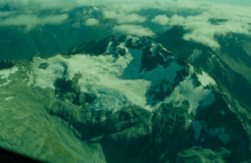
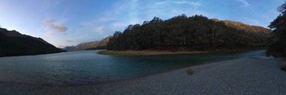

Global Connection to Environmental Science

Environmental science in particular is a fascinating subject to study and field to work in overseas; it is an inherently global subject. While specific environmental issues may be limited to just one area, many are not, and these are struggles that every nation faces. Our world is rapidly developing, so how can we use our natural resources to support this development in a sustainable and responsible way?
When we grow up only exposed to one culture and one way of living, we tend to see this as the only way. Through my courses and internship at NIWA, I was exposed to some different ways in which people view sustainability and environmental protection. For example, New Zealand’s national research agencies are not government-operated as they are in the United States. Kiwis also face the unique challenge of comparing the value of native and invasive species, and whether or not killing the latter in favor of the former is ethical. Seeing the ways in which another nation conducts research has made me reflect more on the systems we have in the United States, and learning about different types of environmental ethics has made me think more about the complexities of environmental science and its policy implications.
I initially thought that this pandemic would make people forget about climate change--certainly there are more pressing issues right now. I was surprised to see an article in the New York Times titled, “Americans See Climate as a Concern, Even Amid Coronavirus Crisis.” A survey found that the percentage of Americans who believe in climate change has remained steady throughout the pandemic, and researchers believe that thinking on climate change has shifted; it is central enough to our lives that we have not forgotten about it. I see this as a success not only because the field I hope to work in has remained relevant, but because the majority of Americans still see climate change as a relevant issue and will hopefully hold private businesses and governments accountable.
